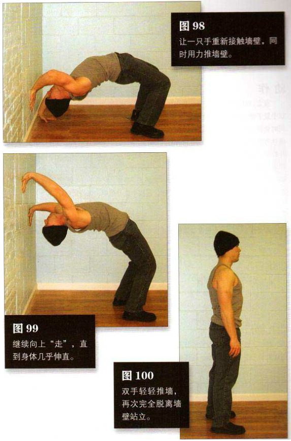

背向墙壁（不接触墙壁）站立，身体向后弯曲，双手举过头顶，与墙壁接触，做出第七式的起始姿势（图 95）。然后，如第七式中描述的那样，双手向下“行走”，直到贴着墙根做出标准的桥式（图 97）。接下来，你需要向反方向运动。让一只手重新接触墙壁，同时用力推墙壁，之后让另一只手也接触墙壁，位置比之前那只手略高（图 98）。把双手从地面上转移到墙壁上，是该动作最难的地方。接来下只是交替地把一只手放得比另一只手更靠上一些，顺着墙壁往上“走”。随着身体逐渐伸展，你很可能需要慢慢小步移动向墙壁靠拢，以保证手掌处有足够的压力。继续向上“走”，直到身体几乎伸直（图 99）。然后，双手轻轻推墙，再次完全脱离墙壁站立（图 100）。站立、向下“行走”、向上“行走”、再回到站立姿势，这就是一个完整的动作。
初级标准：1 组，2 次
中级标准：2 组，各 4 次
高级标准：2 组，各 8 次